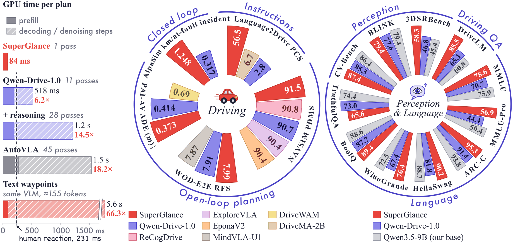
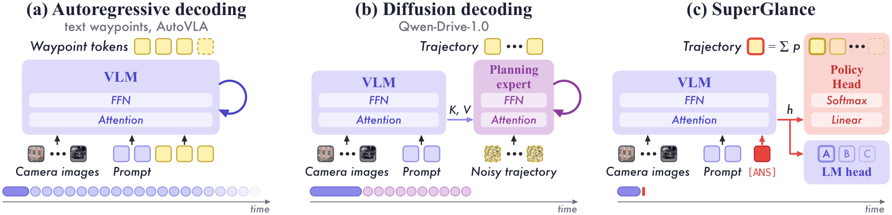
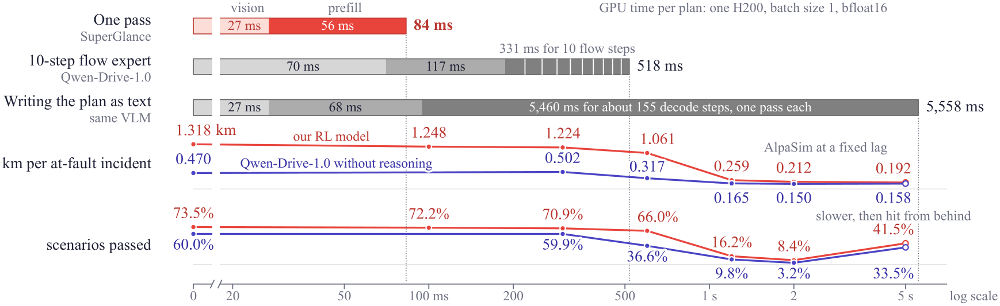

Video
Abstract
Autonomous driving is turning to vision-language-action models (VLAs). They answer and plan by decoding, one step at a time. Each step is another forward pass, so a plan can take over a second of GPU time. Embodied AI often pairs such a slow, reasoning System 2 with a fast System 1 that acts. Human drivers plan at a glance, with System 1. Faster designs usually put System 1 outside the vision-language model (VLM), in a planner without its abilities. Yet before a VLM writes its first token, it has already read the scene into one hidden state. We show that, once trained, this hidden state is enough to drive and to answer questions about what the model sees. SuperGlance reads it to turn a decoder-only VLM into an encoder-style driving policy. Its linear head scores a fixed set of 5,273 candidate trajectories. With the set fixed, rewards are computed offline, so supervised targets can be reward-weighted and reinforcement learning maximizes the exact expected reward. Before and during policy training, multiple-choice training keeps the VLM’s visual abilities in one pass, so the policy still answers questions about driving scenes. Training questions are built against shortcuts. Each must be answered right in two option orders. Against drift, a KL term keeps each stage near its starting model. One pass offers VLAs a more plausible path to System 1. SuperGlance answers visual multiple-choice questions as well as its base VLM does by decoding. It plans in 84 ms of GPU time, six times faster than Qwen-Drive-1.0, and at least as well on NAVSIM, PAI-AV and WOD-E2E. In AlpaSim closed loop, km per at-fault incident holds for both planners up to a 300-ms delay and drops beyond. With GPU time charged as delay, SuperGlance’s lead over Qwen-Drive-1.0 grows from 2.8 to 3.9 times. Delayed by 1.2 s, our model falls below Qwen-Drive-1.0 at its own 518 ms.
Method
SuperGlance turns a decoder-only vision-language model, Qwen3.5-9B, into an encoder-style driving policy that plans in one forward pass. A linear Policy Head on the last hidden state at the answer position, [ANS], scores a fixed set of 5,273 candidate trajectories, and the language-model head still answers multiple-choice questions. As the set is fixed, every candidate’s reward is computed offline, so supervised targets can be reward-weighted and reinforcement learning maximizes the exact expected reward. Multiple-choice training before and during policy training keeps the VLM’s visual abilities in one pass.


[ANS], and its Policy Head gives a probability to each of 5,273 fixed candidates. Each bottom strip shows one plan’s measured GPU time to scale; in (a), our VLM writing text runs off its axis.Results


| Method | RL | Coll.↓ | Off-road↓ | Prog.↑ | km / incident↑ | Pass↑ |
|---|---|---|---|---|---|---|
| Each plan’s GPU time as delay | ||||||
| Qwen-Drive-1.0, 518 ms | 32.6/ | 19.3 | 67.9 | 0.229/ | 36.6 | |
| + reasoning, 1.2 s | 26.7/ | 36.3 | 51.8 | 0.145/ | 9.3 | |
| SuperGlance, 84 ms | ✓ | 10.9/ | 7.5 | 88.5 | 0.970/ | 72.2 |
| No delay (simulator default) | ||||||
| Qwen-Drive-1.0 | 32.8/ | 15.4 | 71.1 | 0.284/ | 58.7 | |
| Qwen-Drive-1.0 | ✓ | 43.6/ | 13.1 | 57.3 | 0.194/ | 53.6 |
| SuperGlance | 11.2/ | 8.8 | 87.9 | 0.886/ | 72.1 | |
| SuperGlance | ✓ | 10.6/ | 7.6 | 88.6 | 0.975/ | 73.5 |
| Qwen3.5-9B | SuperGlance after stage | |||||
|---|---|---|---|---|---|---|
| Benchmark | letter | decoded | Qwen-Drive-1.0 | 1 | 2 | 3 |
| Vision | ||||||
| CV-Bench | 86.36 | 86.47 | 85.29 | 87.60 | 87.66 | 87.40 |
| BLINK | 79.37 | 76.62 | 77.60 | 84.68 | 81.34 | 79.37 |
| 3DSRBench | 45.39 | 57.09 | 46.81 | 60.27 | 60.50 | 58.29 |
| Language | ||||||
| MMLU | 75.91 | 85.21 | 70.69 | 79.79 | 79.63 | 78.61 |
| MMLU-Pro | 50.41 | 73.93 | 44.35 | 59.03 | 57.98 | 56.85 |
| ARC-C | 93.77 | 96.16 | 91.38 | 95.39 | 95.14 | 95.31 |
| HellaSwag | 88.67 | 89.49 | 81.83 | 91.00 | 91.04 | 90.15 |
| WinoGrande | 72.53 | 85.64 | 67.40 | 76.40 | 77.43 | 76.40 |
| BoolQ | 88.62 | 88.29 | 87.65 | 89.72 | 89.48 | 89.42 |
| TruthfulQA | 74.42 | 76.25 | 72.95 | 67.07 | 66.22 | 65.61 |
| Driving | ||||||
| DriveLM | 60.81 | 60.95 | 65.06 | 73.55 | 84.33 | 85.51 |
BibTeX
@article{pei2026superglance,
title = {{SuperGlance}: Driving at a Glance with a Vision-Language Model},
author = {Pei, Jieyuan and Yan, Xin and Xu, Mingwei and Zhang, Haiyi and Zou, Siyu and Hu, Zhangyi and Li, Zhuoxuan and Yang, Yuguang and Zhang, Rongjunchen and Chi, Cheng and Xiong, Hui and Wang, Yan},
journal = {arXiv preprint arXiv:XXXX.XXXXX},
year = {2026}
}